source('ggplot3.R')Import
library(mgcv)data
head(mpg)| manufacturer | model | displ | year | cyl | trans | drv | cty | hwy | fl | class |
|---|---|---|---|---|---|---|---|---|---|---|
| <chr> | <chr> | <dbl> | <int> | <int> | <chr> | <chr> | <int> | <int> | <chr> | <chr> |
| audi | a4 | 1.8 | 1999 | 4 | auto(l5) | f | 18 | 29 | p | compact |
| audi | a4 | 1.8 | 1999 | 4 | manual(m5) | f | 21 | 29 | p | compact |
| audi | a4 | 2.0 | 2008 | 4 | manual(m6) | f | 20 | 31 | p | compact |
| audi | a4 | 2.0 | 2008 | 4 | auto(av) | f | 21 | 30 | p | compact |
| audi | a4 | 2.8 | 1999 | 6 | auto(l5) | f | 16 | 26 | p | compact |
| audi | a4 | 2.8 | 1999 | 6 | manual(m5) | f | 18 | 26 | p | compact |
A tibble: 6 × 11
2.3 Key components
ggplot2
ggplot(mpg, aes(x = displ, y = hwy)) + geom_point()ggplot(mpg) + point(mpg$displ, mpg$hwy)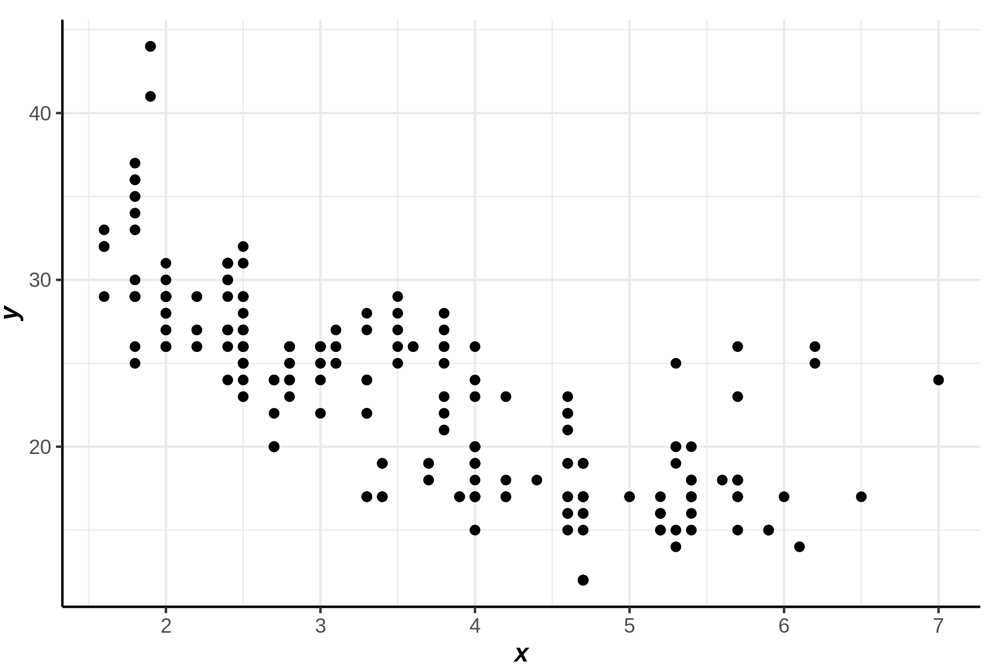
2.4 Colour, size, shape and other aesthetic attributes
ggplot2
ggplot(mpg, aes(displ, hwy, colour = class)) +
geom_point()ggplot() + point(mpg$displ, mpg$hwy, col = as.numeric(factor(mpg$class)))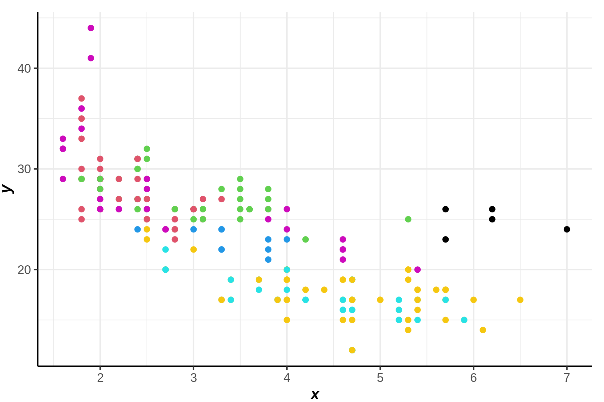
ggplot2
ggplot(mpg, aes(displ, hwy)) + geom_point(aes(colour = "blue"))
ggplot(mpg, aes(displ, hwy)) + geom_point(colour = "blue")ggplot() + point(label='blue',mpg$displ, mpg$hwy)|ggplot() + point(mpg$displ, mpg$hwy, col ="blue")
2.5 Faceting
ggplot2
ggplot(mpg, aes(displ, hwy)) +
geom_point() +
facet_wrap(~class)p1 = ggplot() + point(mpg$displ[mpg$class=='2seater'],mpg$hwy[mpg$class=='2seater'])
p2 = ggplot() + point(mpg$displ[mpg$class=='compact'],mpg$hwy[mpg$class=='compact'])
p3 = ggplot() + point(mpg$displ[mpg$class=='midsize'],mpg$hwy[mpg$class=='midsize'])
p4 = ggplot() + point(mpg$displ[mpg$class=='minivan'],mpg$hwy[mpg$class=='minivan'])
p5 = ggplot() + point(mpg$displ[mpg$class=='pickup'],mpg$hwy[mpg$class=='pickup'])
p6 = ggplot() + point(mpg$displ[mpg$class=='subcompact'],mpg$hwy[mpg$class=='subcompact'])
p7 = ggplot() + point(mpg$displ[mpg$class=='suv'],mpg$hwy[mpg$class=='suv'])
figsize(10,5)
(p1|p2|p3)/(p4|p5|p6)/(p7)
figsize()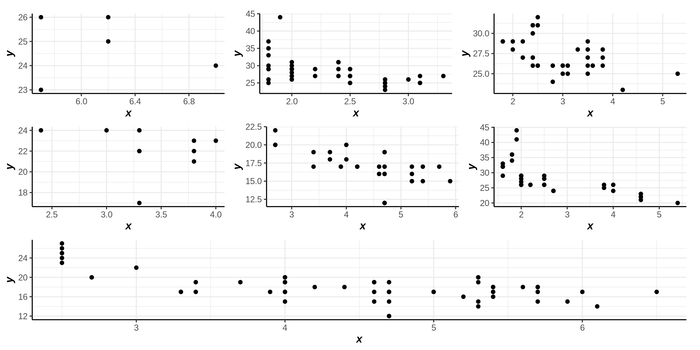
2.6.1 Adding a smoother to a plot
ggplot2
ggplot(mpg, aes(displ, hwy)) +
geom_point() +
geom_smooth()
#> `geom_smooth()` using method = 'loess' and formula = 'y ~ x'ggplot() + point(mpg$displ, mpg$hwy) + smooth(mpg$displ, mpg$hwy) `geom_smooth()` using method = 'loess' and formula = 'y ~ x'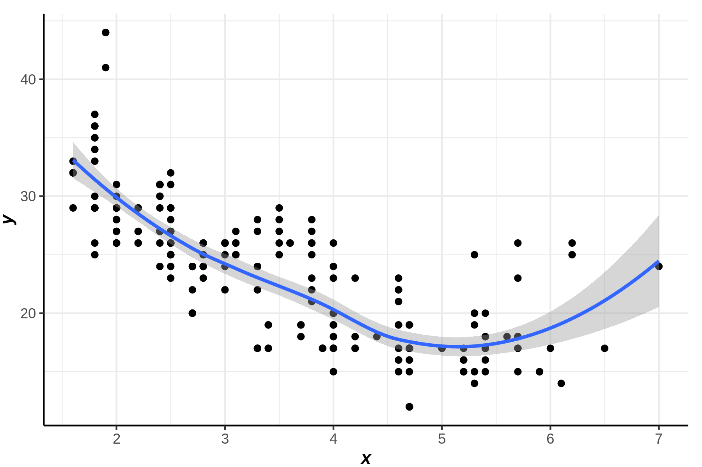
Add plot
ggplot() + point(mpg$displ, mpg$hwy) + smooth(mpg$displ[1:100], mpg$hwy[1:100]) + smooth(mpg$displ[100:234], mpg$hwy[100:234]) `geom_smooth()` using method = 'loess' and formula = 'y ~ x'
`geom_smooth()` using method = 'loess' and formula = 'y ~ x'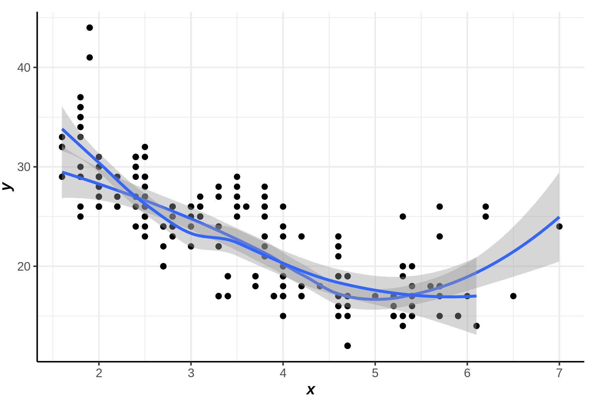
x = 1:100/100
y1 = 2*x + rnorm(100)*0.3
y2 = -3*x + rnorm(100)*0.3 +3ggplot()+point(x,cbind(y1,y2),alpha=0.5) +
smooth(x,cbind(y1,y2))`geom_smooth()` using method = 'loess' and formula = 'y ~ x'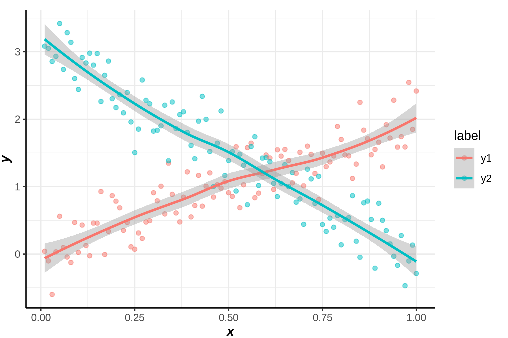
ggplot2
ggplot(mpg, aes(displ, hwy)) +
geom_point() +
geom_smooth(span = 0.2)
#> `geom_smooth()` using method = 'loess' and formula = 'y ~ x'
ggplot(mpg, aes(displ, hwy)) +
geom_point() +
geom_smooth(span = 1)
#> `geom_smooth()` using method = 'loess' and formula = 'y ~ x'p1 = ggplot() + point(mpg$displ, mpg$hwy) + smooth(mpg$displ, mpg$hwy,span = 0.2)
p1 = ggplot() + point(mpg$displ, mpg$hwy) + smooth(mpg$displ, mpg$hwy,span = 1)
p1|p2`geom_smooth()` using method = 'loess' and formula = 'y ~ x'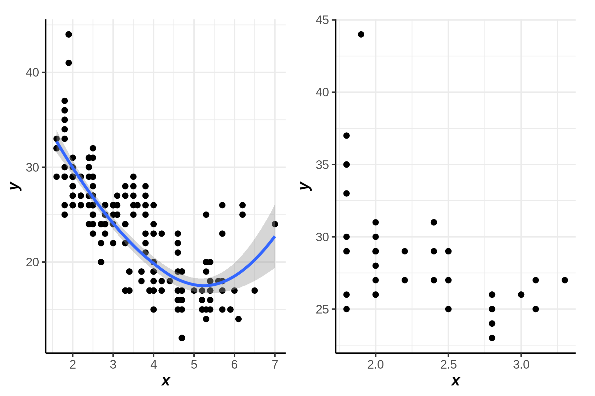
ggplot2
library(mgcv)
ggplot(mpg, aes(displ, hwy)) +
geom_point() +
geom_smooth(method = "gam", formula = y ~ s(x))ggplot() + point(mpg$displ, mpg$hwy) + smooth(mpg$displ, mpg$hwy, method = "gam", formula = y ~ s(x))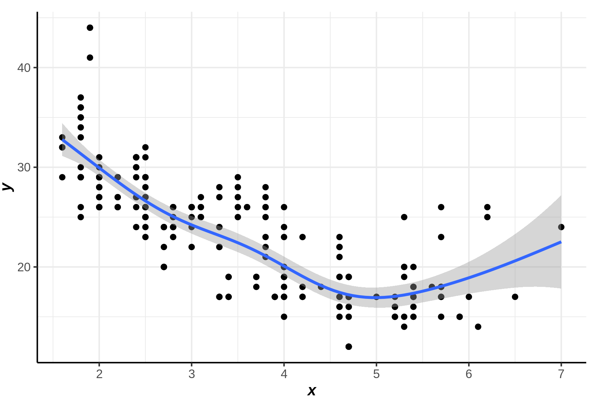
ggplot2
ggplot(mpg, aes(displ, hwy)) +
geom_point() +
geom_smooth(method = "lm")
#> `geom_smooth()` using formula = 'y ~ x'ggplot() + point(mpg$displ, mpg$hwy) + smooth(mpg$displ, mpg$hwy,method = "lm")`geom_smooth()` using formula = 'y ~ x'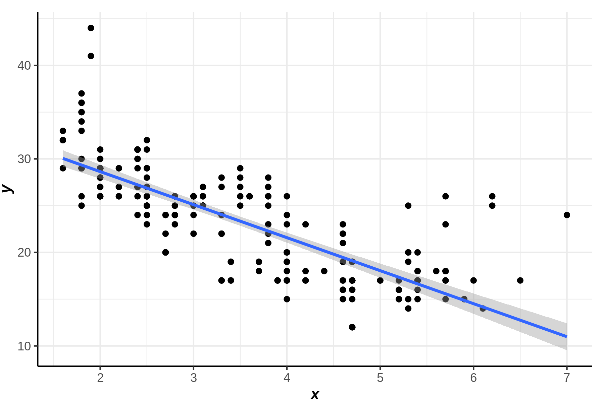
2.6.2 Boxplots and jittered points
ggplot2
ggplot(mpg, aes(drv, hwy)) +
geom_point()ggplot() + point(mpg$drv, mpg$hwy)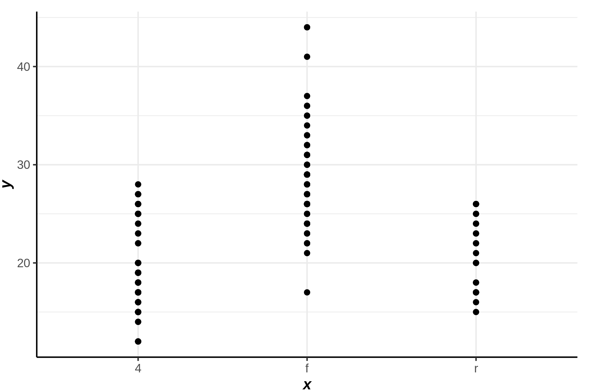
ggplot2
ggplot(mpg, aes(drv, hwy)) + geom_jitter()
ggplot(mpg, aes(drv, hwy)) + geom_boxplot()
ggplot(mpg, aes(drv, hwy)) + geom_violin()p1 = ggplot() + jitter(mpg$drv, mpg$hwy)
p2 = ggplot() + boxplot(mpg$drv, mpg$hwy)
p3 = ggplot() + violin(mpg$drv, mpg$hwy)
figsize(10,5)
p1|p2|p3
figsize()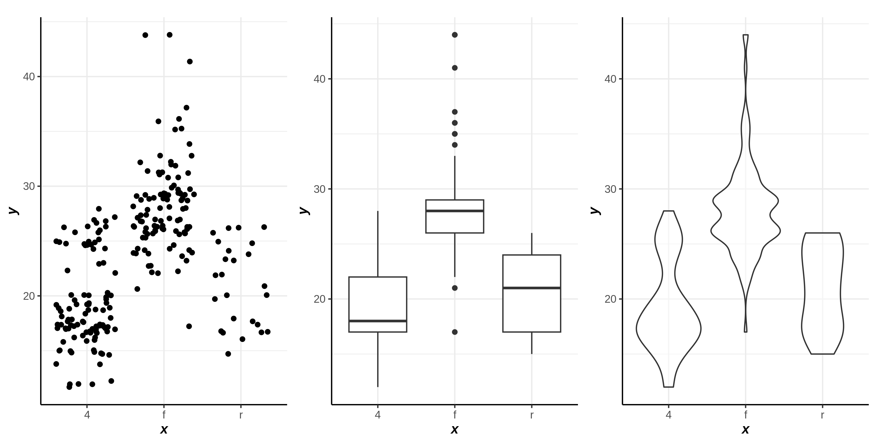
2.6.3 Histograms and frequency polygons
ggplot2
ggplot(mpg, aes(hwy)) + geom_histogram()
#> `stat_bin()` using `bins = 30`. Pick better value with `binwidth`.
ggplot(mpg, aes(hwy)) + geom_freqpoly()
#> `stat_bin()` using `bins = 30`. Pick better value with `binwidth`.geom_freqpoly대체할만한게 뭐 있을까..**
p1 = ggplot() + histogram(mpg$hwy)
p2 = ggplot() + density(mpg$hwy)
figsize(10,5)
p1|p2
figsize()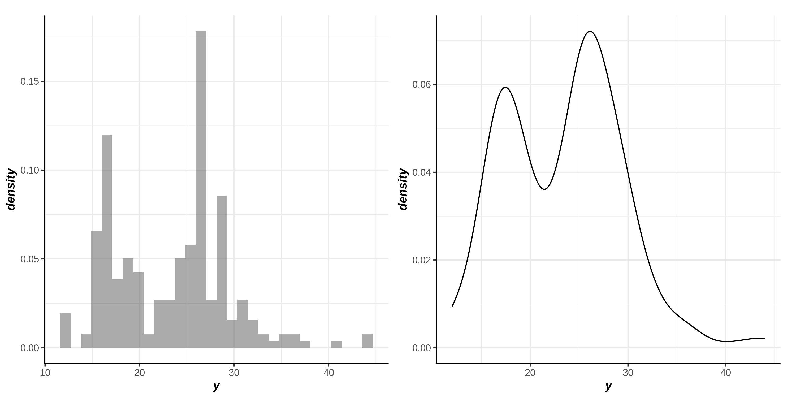
ggplot2
ggplot(mpg, aes(displ, colour = drv)) +
geom_freqpoly(binwidth = 0.5)
ggplot(mpg, aes(displ, fill = drv)) +
geom_histogram(binwidth = 0.5) +
facet_wrap(~drv, ncol = 1)y1 = rnorm(1000)
y2 = rnorm(1000)*0.5 + 3 p1 = ggplot()+histogram(cbind(y1,y2))
p2 = ggplot()+histogram(y1,label="A")+histogram(y2,label="B")
p3 = ggplot()+histogram(c(y1,y2),fill="gray60")
figsize(10,5)
p1|(p2/p3)
figsize()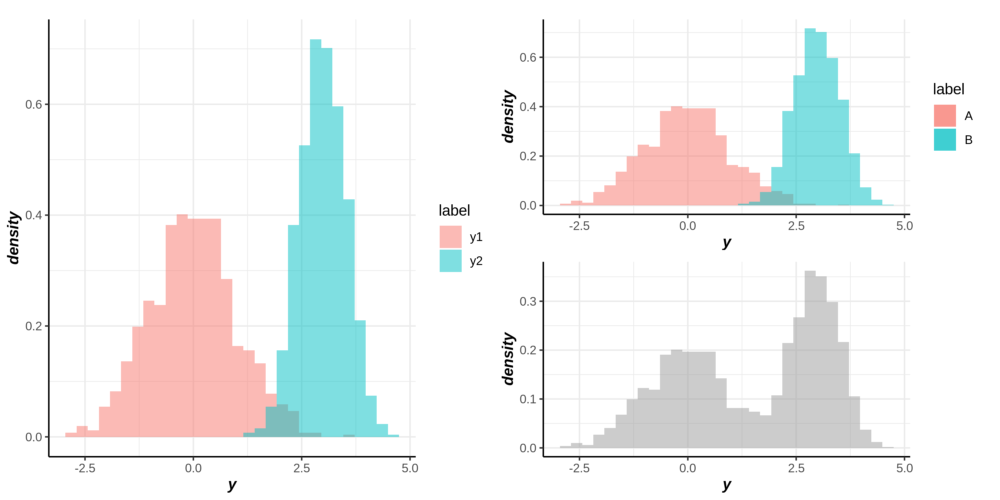
2.6.4 Bar charts
ggplot2
ggplot(mpg, aes(manufacturer)) +
geom_bar()x,y축 어떻게 바꿀 수 있을까…
mpg$manufacturerggplot() + col(mpg$manufacturer,fill=3)drugs <- data.frame(
drug = c("a", "b", "c"),
effect = c(4.2, 9.7, 6.1)
)ggplot2
ggplot(drugs, aes(drug, effect)) + geom_bar(stat = "identity")
ggplot(drugs, aes(drug, effect)) + geom_point()p1 = ggplot() + col(drugs$drug, drugs$effect)
p2 = ggplot() + point(drugs$drug, drugs$effect)
figsize(10,5)
p1|p2
figsize()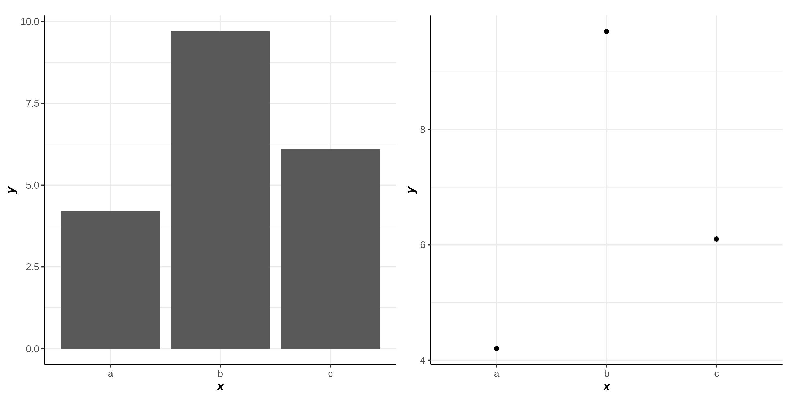
ggplot2
ggplot(economics, aes(date, unemploy / pop)) +
geom_line()
ggplot(economics, aes(date, uempmed)) +
geom_line()p1 = ggplot() + line(economics$date, economics$unemploy)
p2 = ggplot() + line(economics$date, economics$uempmed)
figsize(10,5)
p1|p2
figsize()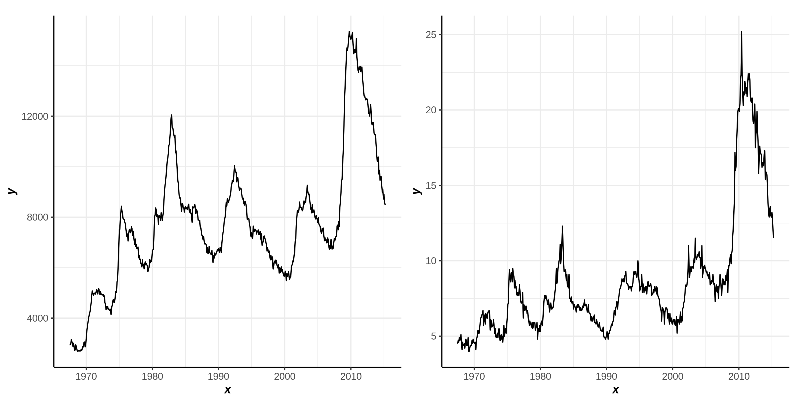
Output
Same with ggplot2
# Save png to disk
# ggsave("plot.png", p, width = 5, height = 5)